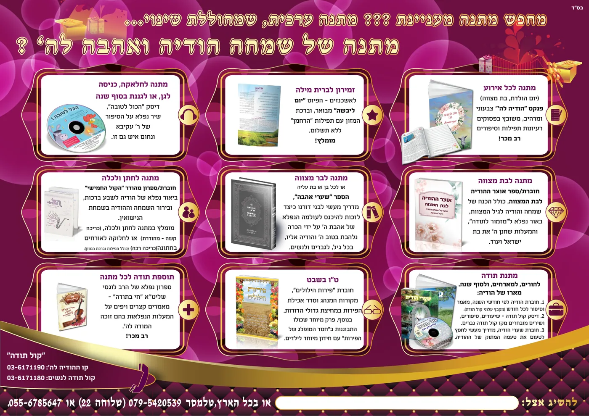

קול תודה - עולם של הודיה
קניית רגשות חיוביים מלאים שמחה אהבה והודיה לה'
באמצעות ספרים, חוברות, פנקסים, מגנטים, דיסקים ועוד

הקול החמישי - הוא על שם הפסוק בנחמה של ירמיהו (לג' י-יא) המתאר את השמחה שתחול לקראת הגאולה:
"כֹּה אָמַר ה' עוֹד יִשָּׁמַע בַּמָּקוֹם הַזֶּה ...
קוֹל שָׂשׂוֹן וְקוֹל שִׂמְחָה קוֹל חָתָן וְקוֹל כַּלָּה
קוֹל אֹמְרִים הוֹדוּ אֶת ה' צְבָאוֹת כִּי טוֹב ה' כִּי לְעוֹלָם חַסְדּוֹ.
באתר זה תראה כיצד הנבואה מתקיימת בפועל, בשנים האחרונות יצאו לאור עשרות מוצרים שמעוררים את הלב להודות לה'.
אתה מוזמן להצטרף לשמחת ההודיה, לטעום ולראות עד כמה נעים ונפלא ומשמח להודות לה'.
בחר לך את המוצר שמתאים לך, ותתחיל גם אתה לראות כיצד הבטחת ה' מתקיימת בימינו! אשרינו שזכינו!
הקבה אוהב לתת למי שיודע לומר תודה - הרב ברוך רוזנבלום
